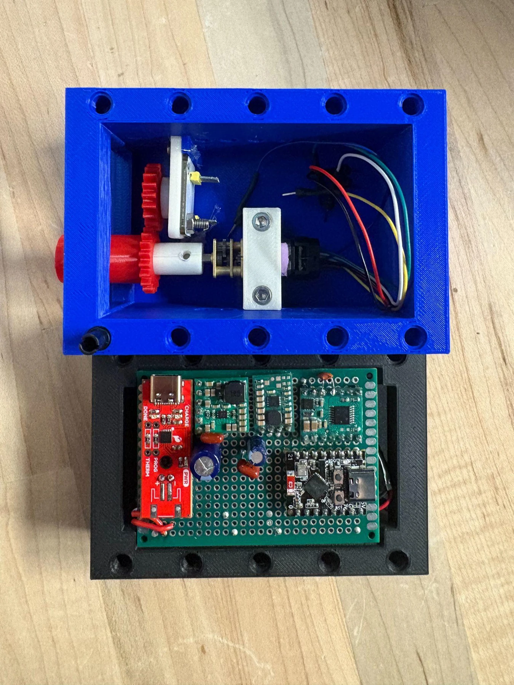
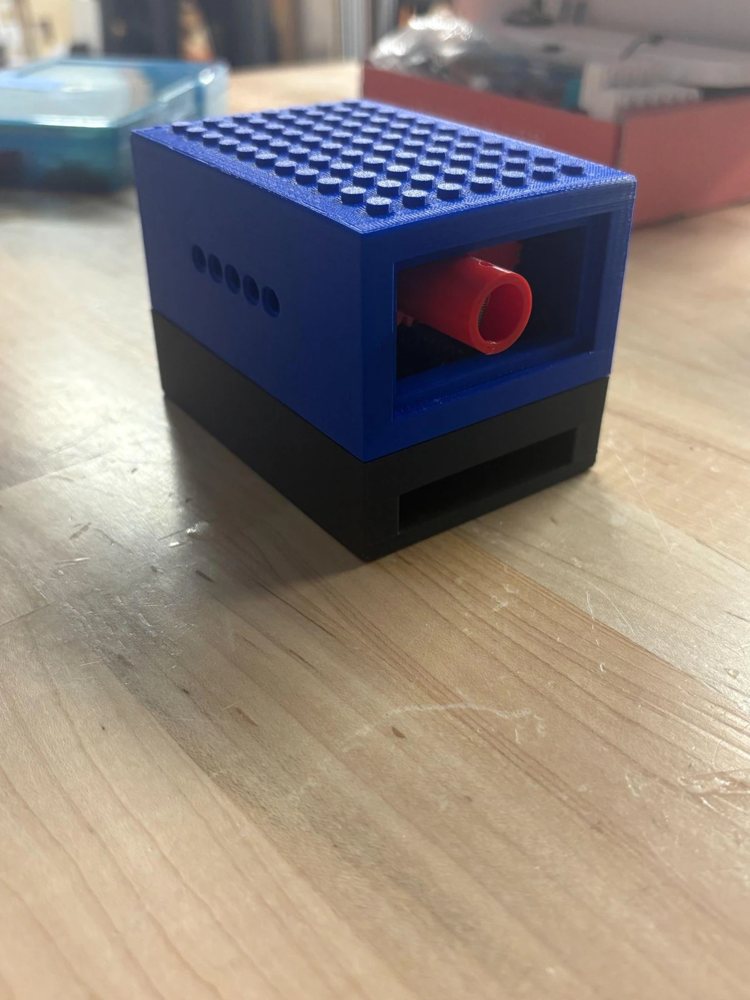
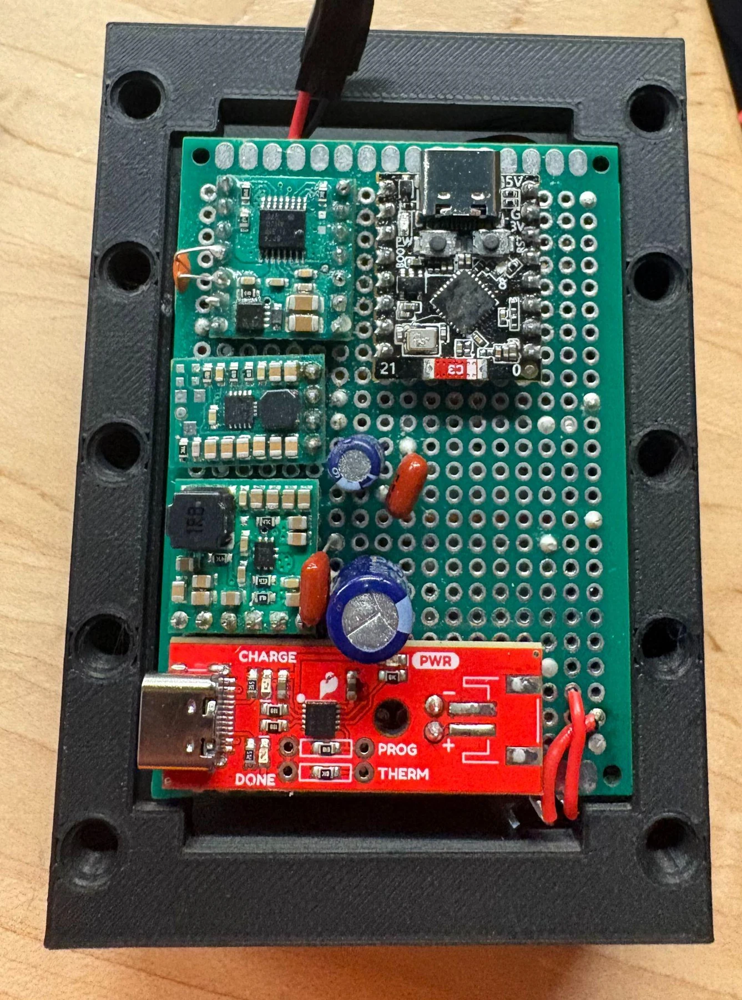
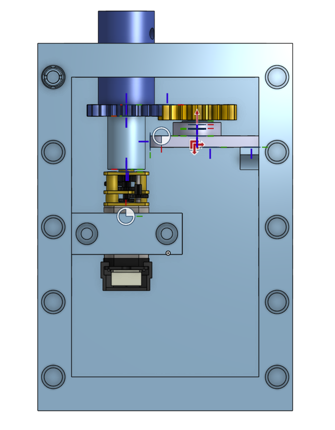
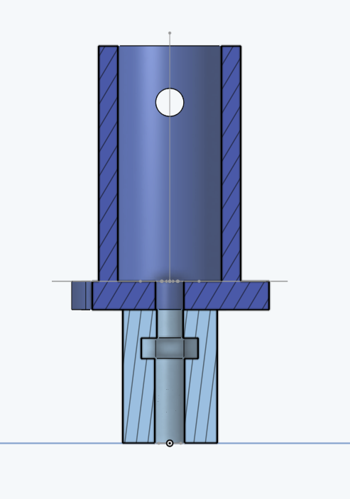
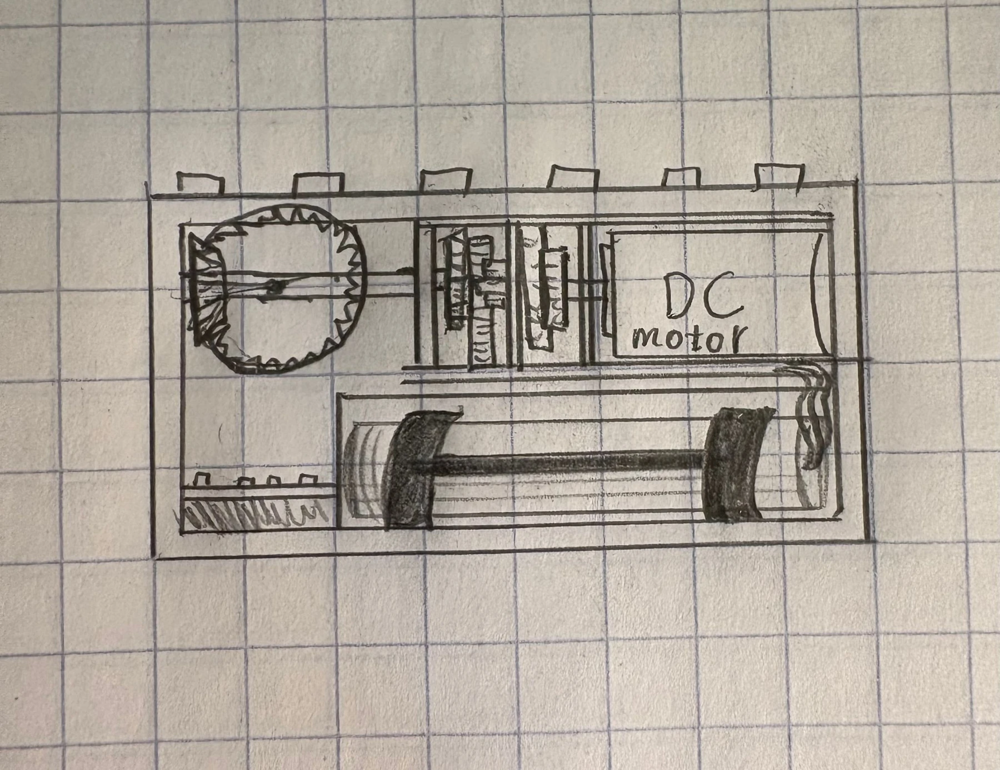
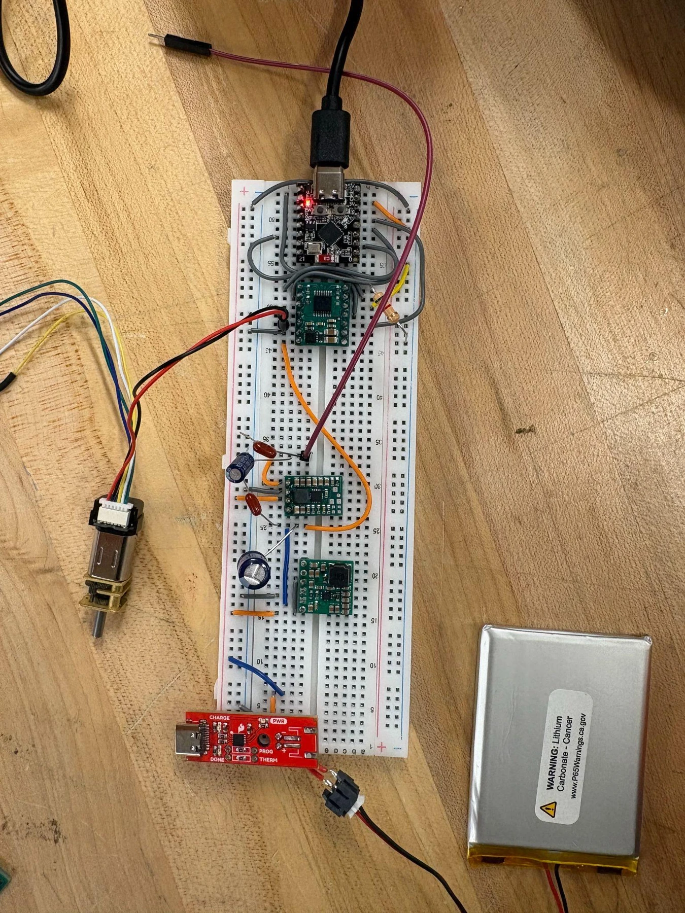
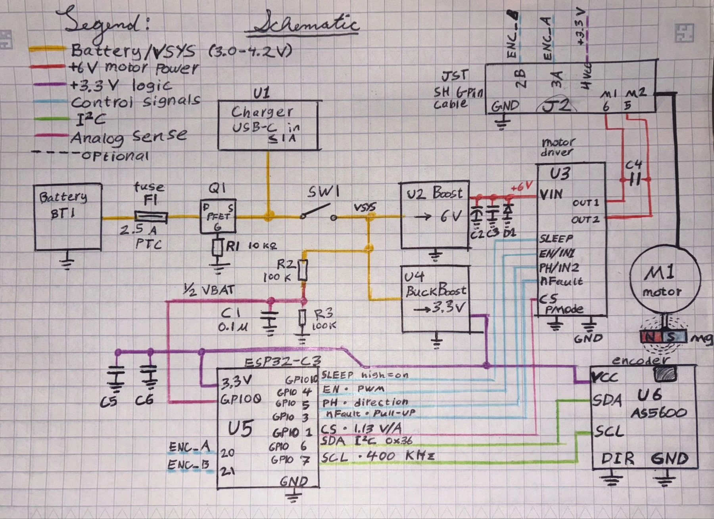

Smart Motor for Educational Robotics
Senior design capstone · Client: SAM Labs · Fall 2026
I’m part of a four-person Tufts senior design team developing a smart motor for SAM Labs. Our first prototype combines a geared DC motor, an adjustable friction clutch, and an absolute encoder linked to the output shaft.



Client brief & team
This semester-long capstone pairs each four-person team with an external client. I’m working with Colin Browning, Hugo Vilbois, and Kirk Haskell, with regular design discussions and feedback from our SAM Labs contact, Julian Di Silva.
SAM Labs asked us to develop a self-contained, battery-powered, wireless motor for hands-on robotics education. It needs to support both continuous rotation and controlled angular positioning, while tolerating students pushing, twisting, or stalling its output shaft.
The mechanical challenge is to protect the geartrain when a student forces the output, while keeping the output position available to the control system. The finished device should also integrate with classroom construction kits and fit into a compact, manufacturable package.
Targets for the finished system
Our current design targets include 1° position error, an output speed of 100 rpm, wireless control, a removable rechargeable battery, and LEGO-compatible construction interfaces. These are goals for development and validation, rather than measured results from Prototype 1.
Prototype 1: current status
We have built the first hardware prototype and packaged its mechanical assembly and electronics in a printed housing. The current build includes:
- A working clutch with adjustable friction: Its resistance can be changed as we refine how the mechanism responds to force applied through the output shaft.
- A 150:1 geared DC motor: The motor and reduction gearbox drive the clutch assembly.
- A mechanical link for output-position sensing: The AS5600 absolute encoder is mechanically linked to the output side of the clutch.
- Integrated prototype electronics: The circuit has progressed from a breadboard to a protoboard assembly mounted in the housing.
The next development phase focuses on integrating encoder feedback into closed-loop control, refining the clutch, and reducing the size of the electronics and enclosure.
Clutch & output sensing
The clutch is intended to let the output slip under excessive applied torque, limiting the load transmitted back through the geartrain. Adjustable friction gives us a way to tune the mechanism as the design develops.
The AS5600 reads a magnet mechanically coupled to the clutch’s output shaft. This placement matters because the output can move when the clutch slips. Measuring motor rotation alone would not capture that movement, so the feedback needs to follow the output side of the mechanism.
This connection establishes the mechanical basis for output feedback. Completing and validating the position and speed control loops remains part of the ongoing work.



Electronics & packaging
The electronics bring together the ESP32-C3 controller, a DRV8874 motor driver, power regulation, and the encoder interface. The power architecture uses a LiPo battery with a 6 V motor supply and a 3.3 V logic supply.
We developed the circuit on a breadboard before moving the components onto protoboard. That step brought the electronics into the first housing and gave us a physical assembly to evaluate alongside the clutch and drivetrain.
Our development drawings document the power and signal connections. A custom PCB is planned for a later prototype to consolidate the circuit and support a smaller enclosure.


Next steps
- Encoder integration and control: Use the output feedback to develop and validate angular-position and speed control.
- Clutch refinement: Continue adjusting the mechanism’s response to force applied through the output.
- Smaller electronics and housing: Develop a custom PCB and refine the enclosure around the mechanical and electrical assemblies.
- Wireless operation: Complete the wireless-control functionality required for a self-contained classroom device.
- Educational demonstration: Build an activity that demonstrates controlled motion and the clutch’s response when a user forces the output shaft.